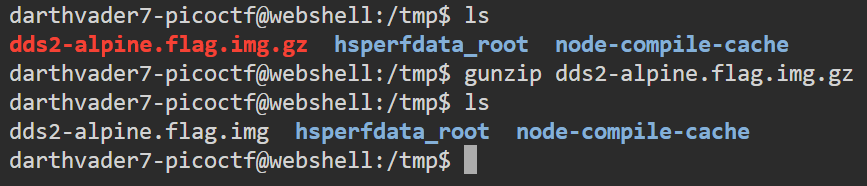

This writeup is for the Disk, disk, sleuth! II challenge which was part of the picoCTF 2021 Capture The Flag (CTF) tournament.
Link to the challenge: Disk, disk, sleuth! II (Note: Login required to view the challenge)
The following is the challenge description:
All we know is the file with the flag is named
down-at-the-bottom.txtAttached file: dds2-alpine.flag.img.gz
I used The Sleuth Kit tools along with other Linux command line utilities to complete this challenge. The following are The Sleuth Kit tools that I used in this challenge:
Let's analyze the attached files to find the flag.
First, we will download the challenge file in the /tmp directory of our webshell session.
I used the following command to download the challenge files:
wget https://challenge-files.picoctf.net/c_wily_courier/9597778734a3bb4ec711a6ac277146632eecda1ab82275d2e108ac8bc09b209d/dds2-alpine.flag.img.gzThis downloads the file named dds2-alpine.flag.img.gz which is a gzip file. We need to unzip this file to get the disk image file.
I used the following command to unzip the gzip file:
gunzip dds2-alpine.flag.img.gz
This command unzips the gzip file and saves the disk image file (.img) in the same directory.

Now that we have unzipped the gzip file, let's take a look at the disk's partition table to find out the main partition.
I used the following command to view the given disk image's partition table:
mmls dds2-alpine.flag.img
The third partition named Linux (0x83) is the largest partition. Also, given its name, it looks like the main partition.
The Start value gives us the offset value for our main partition, which is 2048
Since we have assumed that the partition titled Linux (0x83) is the main partition, let's explore that partition further.
I used the following command to view the contents of the main partition:
fls -o 2048 dds2-alpine.flag.img
In the fls command, I have provided the offset value of the partition as 2048 as mentioned in the partition table.
Since I did not provide any inode number in the argument, the fls tool uses the root directory of the partition.
From the image above, we can clearly see that there are multiple directories like etc, root, lib, etc. which are standard Linux directories. Hence, this proves that our assumption was spot on, and the third partition is the main partition.
Now that we have confirmed that the partition we are viewing is indeed the main partition, we now need to find the file that has our flag.
In the challenge description, we are told that the name of the file, where the flag is stored, is down-at-the-bottom.txt.
I used the following command to search for the presence of such file to find its inode number:
fls -r -o 2048 dds2-alpine.flag.img | grep "down-at-the-bottom.txt"
This command recursively traverses through each directory and file (due to the -r tag), and outputs the instance where the string "down-at-the-bottom.txt" is found.
From the output shown in the image, we can see that the inode number of the target file is 18291. We can use this inode number to output the contents of the file.
Now that we have the inode number of the file down-at-the-bottom.txt which is 18291, we can output the contents of the file using the icat tool as shown in the command below:
icat -o 2048 dds2-alpine.flag.img 18291
This command outputs the contents of a single file based on its inode number in the specified partition.
The image shows the contents of the flag file, and we have our flag.
After combining the letters from the flag file, we get the flag value which is picoCTF{f0r3ns1c4t0r_n0v1c3_4bd721f2}.